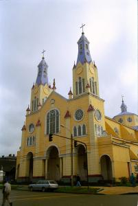
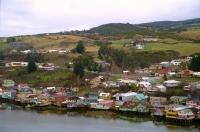
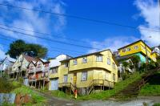
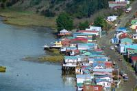
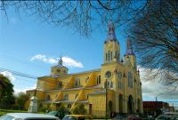

|
Mercredi 15 août
C'est le 15 août, c'est férié. Internet à 500 pesos l'heure est fermé. Lionel
n'est pas content. On quitte l'hospedaje de nos petits vieux avec son eau bien
chaude dans l'immense salle de bain à l'ancienne et ses chauds édredons. On
prend le bus pour Castro, "capitale" de l'île de Chiloé. Chauffé le bus, qu'ils
disent sur leur pub. On se caille pendant 7 heures tout en contemplant le volcan
Osorno enneigé. en plus, le gars ouvre les ouvertures du toit pour enlever la
buée. Ca caille et il n'y a même pas de couvertures.
Puerto Montt, le bac, et nous voici sur Chiloé, l'île où paraît-il le temps
s'est arrêté. 200 km de long, 50 de large, découverte tardivement en 1553 par
les conquistadores espagnols, Chiloé est un peu à part dans l'histoire du Chili.
Les paysages sont chouettes. On se croirait tantôt en Normandie, tantôt en Bretagne
sauf qu'il y a plein de colines partout, que les maisons sont en bois et colorées,
que les moutons ont de la laine sur la tête et que l'on croise quelques cow
boys à cheval en tournée sur leurs terres, ou allant en carriole au marché ou
faire des livraisons. Par contre, comme en Bretagne, c'est verte, le ciel est
gris et bas, le temps changeant, il y a plein de genêts tout jaunes et des vaches,
moutons et chevaux et chevaux dnas les prés. ici, on vit de pèche, ramassage
de coquillages et agriculture.
Jeudi 16 août, Chonchi
On s'est gelé toute la nuit. Je crois que cette chambre n'a pas été utilisée
depuis longtemps parce que draps et lit sont très glacés. Castro, c'est sympa...
entre deux averses. En particulier la cathédrale en bois, jaune et mauve de
l'extérieur, et bois naturel super joli à l'intérieur. Toute la ville est en
bois. Les pompiers sont au centre de la ville (10 ou 15 milles habitants) on
comprend pourquoi. Surtout quand on voit les chauffages utilisés: poêles à bois.
Les maisons sont peintes en bleu, vert, jaune, rouge, orange, unicolores, bicolores,
tricolores ou plus. Ce serait super joli s'il mn'y avait pas partout 50 fils
électriques, téléphone qui gâchent les façades. Et quand je dis 50, ce n'est
pas une image.
Les seuls touristes qu'on croise sont chiliens. On a du en croiser 2... Sont
pas fous, ils ont du apprendre que c'est l'hiver et que ça caille. Ca explique
pourquoi les chilotes nous regardent avec intérêt et amusement ou alors c'est
à cause de nos blousons rouges et jaunes identiques. Ou de nos grands bonnets
enfoncés jusqu'aux oreilles. Toujours est-il que notre vue semble les réjouir.
Eux, ils semblent avoir toujours chaud.
L'après-midi, on va à Chichon, heu, Chonchi! Parait que le temps s'est
arrêté là-bas, c'est écrit dans les guides. Malheureusement, il ne s'est pas
arrêté au beau fixe. L'église en bois, les maisons en bois, les carrioles à
cheval, les paysans à cheval, les moutons avec de la laine sur le front, les
grosses vaches, les chiens partout très gentils qui croient qu'ils sont avec
nous, ces grands oiseaux gris à cou jaune et long bec recourbé qui cancannent
comme des canards mais qui n'on pas de pattes palmées, qui sont plus gros, les
marins, les bateaux, le pacifique, les lions de mer qui jouent, les cormorans,
les couples de 12 à 80 ans qui n'arrêtent pas de se bécoter (ça réchauffe) sur
les bancs publics assis sur un cahier pour ne pas geler par els fesses, on a
vu tout ça. C'est chouette, mais quand même un peu mort il faut le reconnaître.
C'est sûrement plus gai l'été.
Vendredi 17 août, Dalcahué et Achao
Cette nuit, il a gelé. On voit les mares gelées sur la route de Dalcahué et
quand on respirait dans la chambre, ça faisait de la buée. Dalcahué, c'est un
village à 20 km de Castro. Le temps s'y est arrêté et l'église y est en bois.
Les chilotes sont sympas, on s'en rend mieux compte depuis qu'on fait des progrès
en espagnol. C'est tout de même mieux de pouvoir converser. Enfin, converser
est un bien grand mot pour parler des 3 phrases qu'on a apprises: "no habla
espagnol", "soy frances", "no comprendo". Ceci en plus evidemment des quelques
expressions que nous maîtrisions déjà: "donde estan los baños", "es la hora
de la siesta", ainsi que du large vocabulaire grossier qui bien entendu ne nous
sert à rien.
Après avoir bien profité de la jolie église en bois de Dalcahué (patrimoine
de l'humanité) et des lions de mer jouant autour des bateaux de pêche au soleil,
on a pris le bac pour l'île de Quinchao en face. Là, direction le village d'Achao
pour admirer la plus ancienne église de Chiloé (1730), pas une once de métal
ni de béton. Belle leçon de savoir-faire. Et en plus, elle est belle, Lionel
en reste bouche bée.he bée. Là aussi, le temps semble s'être arrêté et tout
est au ralenti qu'ils disent dans les guides. C'est vrai qu'il n'y a pas de
ciné, pas de vrai supermarché (toutes les épiceries de 2 mètres sur 3 s'appellent
"supermercado"), pas beaucoup de modernité, mais on est tout de même au 21ème
siècle, avec ses voitures, ses polaires, même quelques téléphones portables
et... ben oui, c'est tout. C'est vrai qu'il n'y a pas de chauffage central et
que la vie est celle d'un village. C'est très sympa. Au marché, les gens des
îles voisines sont venus. Vers 15 heures, l'agitation monte autour de la dizaine
de bateaux qui assurent les liaisons. Les colis sont chargés, les gens papotent
sur le quai, se disent bonjour ou au revoir on ne sait plus trop, se trompent
de bateau, (il faut dire qu'ils ont l'air emmêlés les uns sur les autres) et
se dépêchent car même si le temps semble s'être arrêté, la marée continue à
descendre! Et bientôt les bateaux seront coincés au port. Et puis d'un coup,
ils sont tous partis: les gens, les bateaux, les charettes à cheval. Il ne reste
que les cris des mouettes, ceux des enfants qui jouent sur la plage, les chiens
et cette dame qui ramasse les algues. C'est pour les sushis du Japon. Ah, et
il reste l'église en bois.
Suite du voyage : Le parc national de Cucao
|

Chili
Castro
|

Chili
Castro
|

Chili
Castro
|

Chili
Castro
|

Chili
Castro
|
|
|